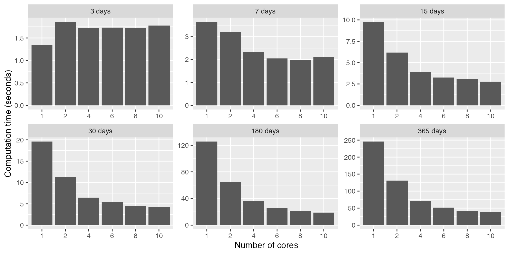

The function smart_charging() has complex calculations
(described in the Smart
charging article) that are repeated on a daily basis. A 24 hours
period is considered an independent optimization window, thus the
corresponding calculations can be done in parallel.
In computer science, a common practice to reduce computation times is
parallel processing when the CPU of the computer has
multiple cores that can work independently. We can discover the number
of cores in our computer CPU using function
parallel::detectCores():
n_cores <- parallel::detectCores()
print(n_cores)## [1] 14In this case, the CPU used is the Apple M4 Pro, which features 10
performance CPU cores (P-core) running at up to 4.5 GHz along with 4
efficient cores (E-core) running at up to 2.6 GHz. So, when
parallel::detectCores() returns 14, macOS is exposing 14
logical cores — but not all of them are equal in speed.
In flextools, parallel processing is used inside the
smart_charging() function, using the mirai
package and its mirai::daemons() function to set the number
of cores that we want to work in parallel. Below you will find an
example about how to use this functionality.
Smart charging
Package evsim provides a sample data set of California
EV sessions from October 2018 to September 2021. If we filter sessions
corresponding to 2019, we have >15.000 sessions, with an average of
70 charging sessions during working days.
sessions_2019 <- evsim::california_ev_sessions_profiles %>%
filter(year(ConnectionStartDateTime) == 2019)Let’s use these real charging sessions to simulate
smart_charging() using multiple cores (with
mirai::daemons()) but also different values of number of
days (optimization windows):
n_days_seq <- c(3, 7, 15, 30, 180, 365) # Days in a year
n_cores_seq <- c(1, seq(2, 10, 2)) # 10 performance cores (P-core)
cores_time <- tibble(
days = rep(n_days_seq, each = length(n_cores_seq)),
cores = rep(n_cores_seq, length(n_days_seq)),
time = 0
)
for (nd in n_days_seq) {
message(nd, " days ---------------- ")
sessions <- sessions_2019 %>%
filter(date(ConnectionStartDateTime) <= dmy(01012019)+days(nd)) %>%
evsim::adapt_charging_features(time_resolution = 15)
sessions_demand <- evsim::get_demand(sessions, resolution = 15)
opt_data <- tibble(
datetime = sessions_demand$datetime,
production = 0
)
for (mcc in cores_time$cores[cores_time$days == nd]) {
message(mcc, " cores")
if (mcc > 1) {
mirai::daemons(mcc)
}
results <- system.time(
smart_charging(
sessions, opt_data, opt_objective = "grid", method = "curtail",
window_days = 1, window_start_hour = 5
)
)
mirai::daemons(0)
cores_time$time[
cores_time$cores == mcc & cores_time$days == nd
] <- as.numeric(results[3])
}
}
# Adapt variables for a better plot
cores_time <- cores_time %>%
mutate(
days = factor(
paste(days, "days"),
levels = factor(paste(n_days_seq, "days"))
),
cores = factor(cores)
)And below there’s the plot of the results, were we can see:
- Parallel processing is only useful from 1 week of data
- From more than 1 month of data the computation time is reduced at a half with just 2 cores, and then the decrease of computation time is less relevant.
cores_time %>%
ggplot(aes(x = cores, y = time)) +
geom_col() +
labs(x = "Number of cores", y = "Computation time (seconds)") +
facet_wrap(vars(days), scales = "free", nrow = 2)